万字长文 | 从实践到原理，带你参透 gRPC
原创 陈煎鱼 脑子进煎鱼了;) 2020-12-14
大家好，我是煎鱼。
gRPC 在 Go 语言中大放异彩，越来越多的小伙伴在使用，最近也在公司安利了一波，希望这一篇文章能带你一览 gRPC 的巧妙之处，本文篇幅比较长，请做好阅读准备。
本文目录如下：
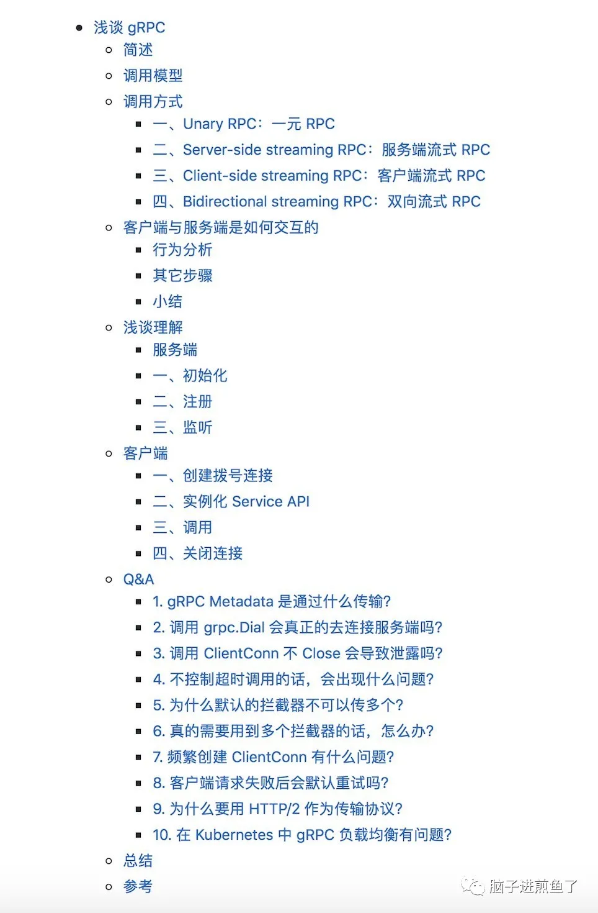
简述
gRPC 是一个高性能、开源和通用的 RPC 框架，面向移动和 HTTP/2 设计。目前提供 C、Java 和 Go 语言版本，分别是：grpc, grpc-java, grpc-go. 其中 C 版本支持 C, C++, Node.js, Python, Ruby, Objective-C, PHP 和 C# 支持。
gRPC 基于 HTTP/2 标准设计，带来诸如双向流、流控、头部压缩、单 TCP 连接上的多复用请求等特性。这些特性使得其在移动设备上表现更好，更省电和节省空间占用。
调用模型
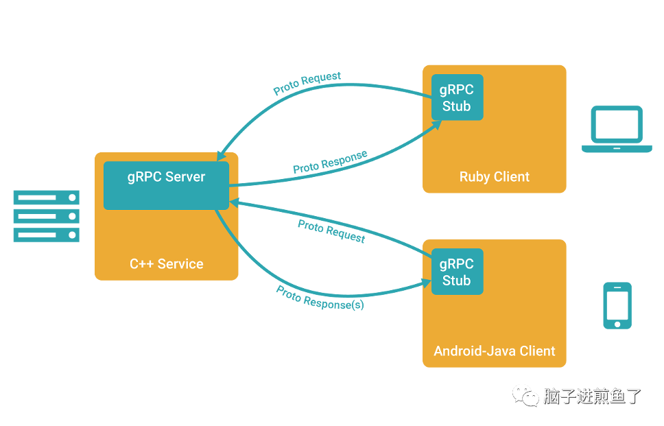
1、客户端（gRPC Stub）调用 A 方法，发起 RPC 调用。
2、对请求信息使用 Protobuf 进行对象序列化压缩（IDL）。
3、服务端（gRPC Server）接收到请求后，解码请求体，进行业务逻辑处理并返回。
4、对响应结果使用 Protobuf 进行对象序列化压缩（IDL）。
5、客户端接受到服务端响应，解码请求体。回调被调用的 A 方法，唤醒正在等待响应（阻塞）的客户端调用并返回响应结果。
调用方式
一、Unary RPC：一元 RPC
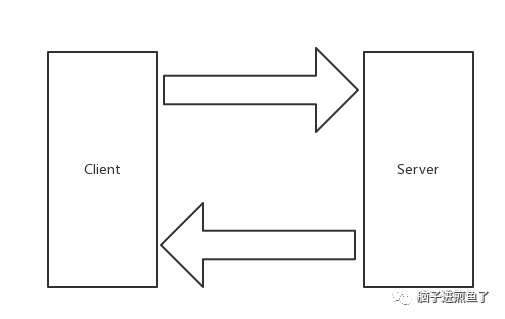
Server
1 | type SearchService struct{} |
- 创建 gRPC Server 对象，你可以理解为它是 Server 端的抽象对象。
- 将 SearchService（其包含需要被调用的服务端接口）注册到 gRPC Server。的内部注册中心。这样可以在接受到请求时，通过内部的 “服务发现”，发现该服务端接口并转接进行逻辑处理。
- 创建 Listen，监听 TCP 端口。
- gRPC Server 开始 lis.Accept，直到 Stop 或 GracefulStop。
Client
1 | func main() { |
- 创建与给定目标（服务端）的连接句柄。
- 创建 SearchService 的客户端对象。
- 发送 RPC 请求，等待同步响应，得到回调后返回响应结果。
二、Server-side streaming RPC：服务端流式 RPC
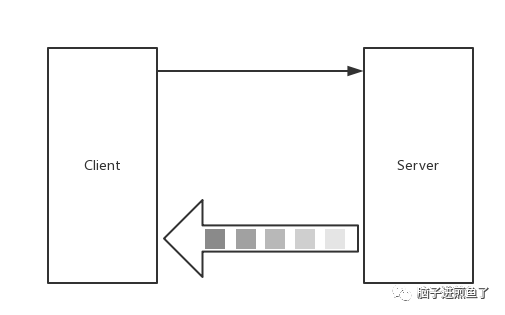
Server
1 | func (s *StreamService) List(r *pb.StreamRequest, stream pb.StreamService_ListServer) error { |
Client
1 | func printLists(client pb.StreamServiceClient, r *pb.StreamRequest) error { |
三、Client-side streaming RPC：客户端流式 RPC
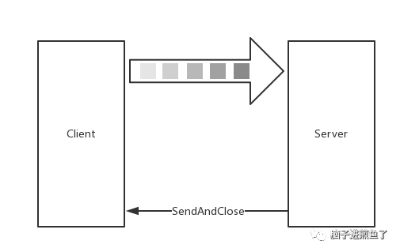
Server
1 | func (s *StreamService) Record(stream pb.StreamService_RecordServer) error { |
Client
1 | func printRecord(client pb.StreamServiceClient, r *pb.StreamRequest) error { |
四、Bidirectional streaming RPC：双向流式 RPC
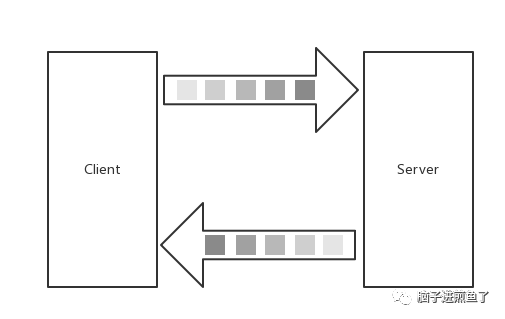
Server
1 | func (s *StreamService) Route(stream pb.StreamService_RouteServer) error { |
Client
1 | func printRoute(client pb.StreamServiceClient, r *pb.StreamRequest) error { |
客户端与服务端是如何交互的
在开始分析之前，我们要先 gRPC 的调用有一个初始印象。那么最简单的就是对 Client 端调用 Server 端进行抓包去剖析，看看整个过程中它都做了些什么事。如下图：
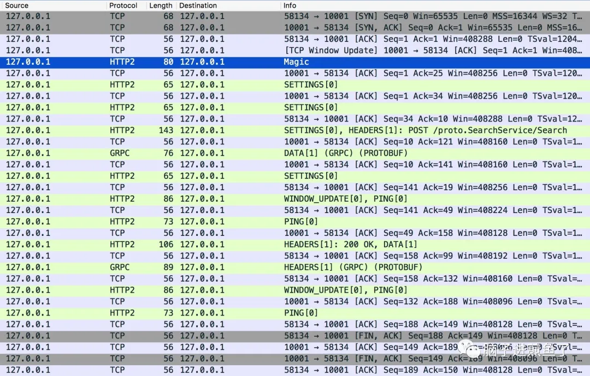
- Magic
- SETTINGS
- HEADERS
- DATA
- SETTINGS
- WINDOW_UPDATE
- PING
- HEADERS
- DATA
- HEADERS
- WINDOW_UPDATE
- PING
我们略加整理发现共有十二个行为，是比较重要的。在开始分析之前，建议你自己先想一下，它们的作用都是什么？大胆猜测一下，带着疑问去学习效果更佳。
行为分析
Magic
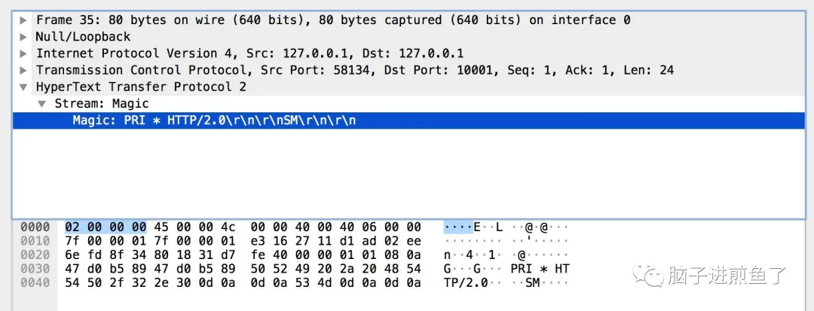
Magic 帧的主要作用是建立 HTTP/2 请求的前言。在 HTTP/2 中，要求两端都要发送一个连接前言，作为对所使用协议的最终确认，并确定 HTTP/2 连接的初始设置，客户端和服务端各自发送不同的连接前言。
而上图中的 Magic 帧是客户端的前言之一，内容为 PRI * HTTP/2.0\r\n\r\nSM\r\n\r\n，以确定启用 HTTP/2 连接。
SETTINGS
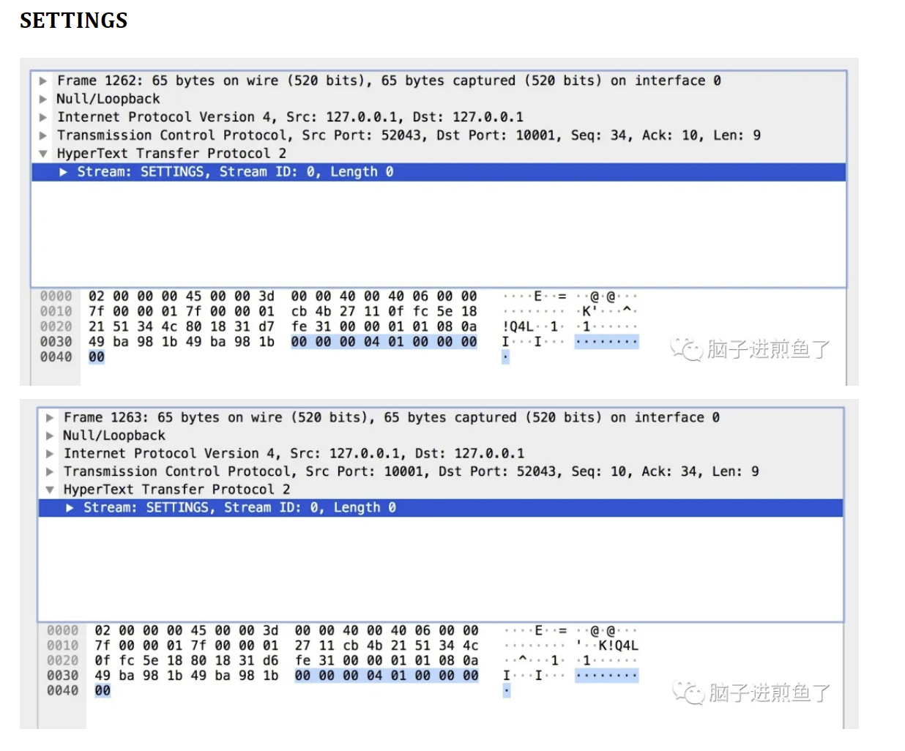
SETTINGS 帧的主要作用是设置这一个连接的参数，作用域是整个连接而并非单一的流。
而上图的 SETTINGS 帧都是空 SETTINGS 帧，图一是客户端连接的前言（Magic 和 SETTINGS 帧分别组成连接前言）。图二是服务端的。另外我们从图中可以看到多个 SETTINGS 帧，这是为什么呢？是因为发送完连接前言后，客户端和服务端还需要有一步互动确认的动作。对应的就是带有 ACK 标识 SETTINGS 帧。
HEADERS
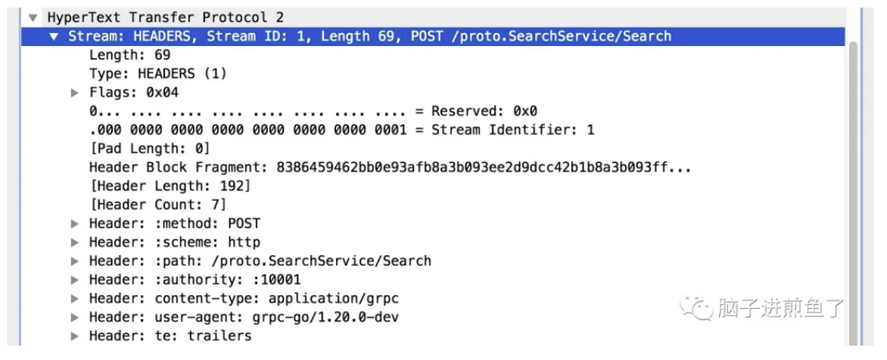
HEADERS 帧的主要作用是存储和传播 HTTP 的标头信息。我们关注到 HEADERS 里有一些眼熟的信息，分别如下：
- method：POST
- scheme：http
- path：/proto.SearchService/Search
- authority：:10001
- content-type：application/grpc
- user-agent：grpc-go/1.20.0-dev
你会发现这些东西非常眼熟，其实都是 gRPC 的基础属性，实际上远远不止这些，只是设置了多少展示多少。例如像平时常见的 grpc-timeout、grpc-encoding 也是在这里设置的。
DATA
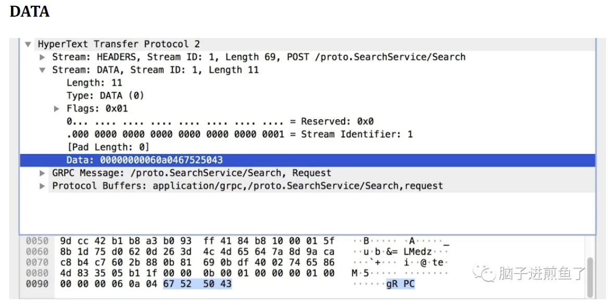
DATA 帧的主要作用是装填主体信息，是数据帧。而在上图中，可以很明显看到我们的请求参数 gRPC 存储在里面。只需要了解到这一点就可以了。
HEADERS, DATA, HEADERS
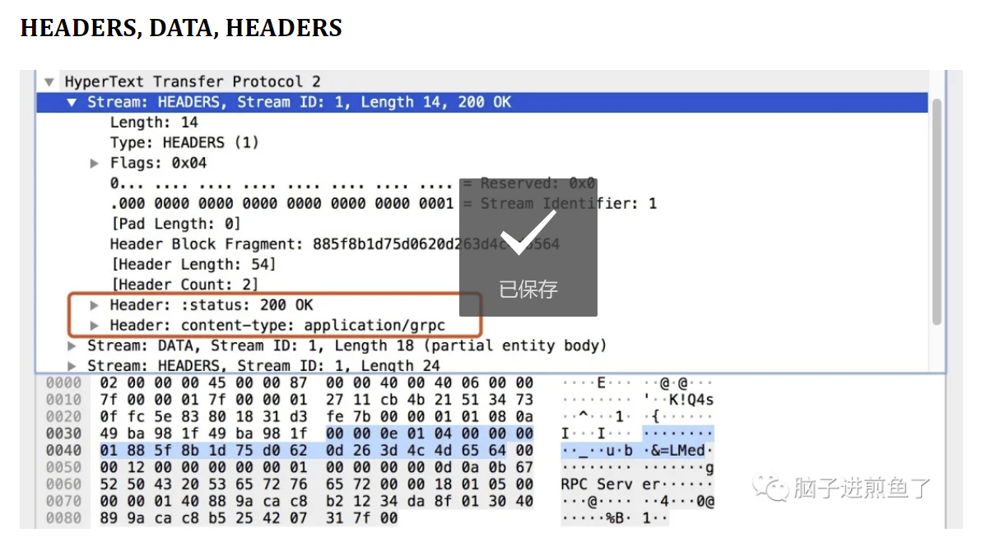
在上图中 HEADERS 帧比较简单，就是告诉我们 HTTP 响应状态和响应的内容格式。
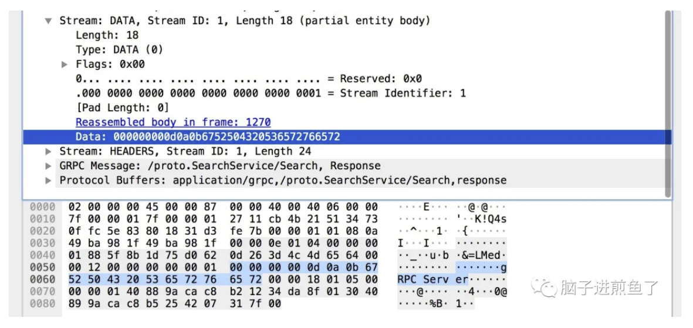
在上图中 DATA 帧主要承载了响应结果的数据集，图中的 gRPC Server 就是我们 RPC 方法的响应结果。
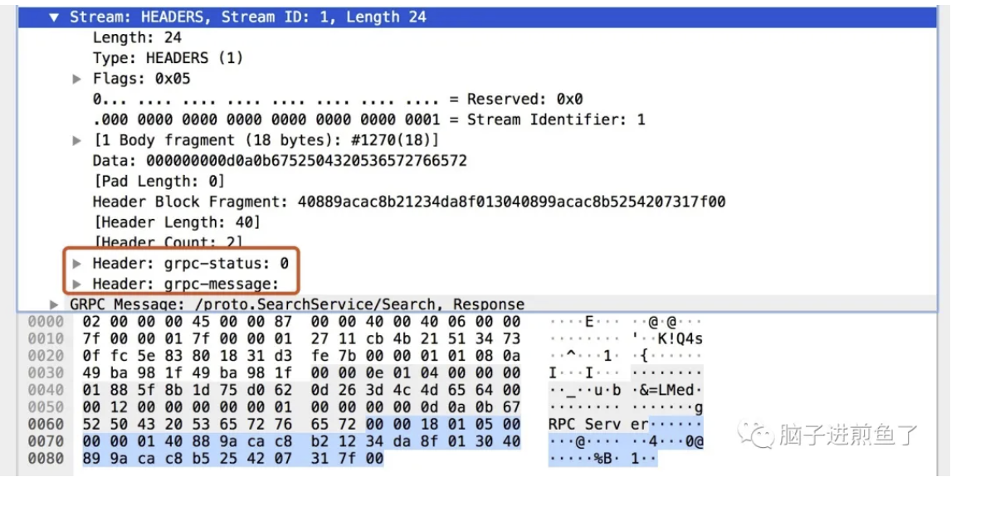
在上图中 HEADERS 帧主要承载了 gRPC 状态 和 gRPC 状态消息，图中的 grpc-status 和 grpc-message 就是我们的 gRPC 调用状态的结果。
其它步骤
WINDOW_UPDATE
主要作用是管理和流的窗口控制。通常情况下打开一个连接后，服务器和客户端会立即交换 SETTINGS 帧来确定流控制窗口的大小。默认情况下，该大小设置为约 65 KB，但可通过发出一个 WINDOW_UPDATE 帧为流控制设置不同的大小。
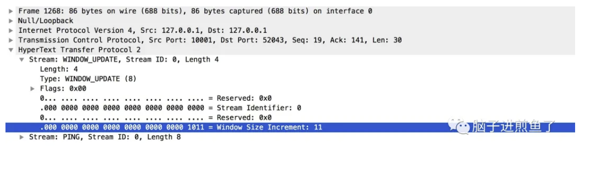
PING/PONG
主要作用是判断当前连接是否仍然可用，也常用于计算往返时间。其实也就是 PING/PONG，大家对此应该很熟。
小结
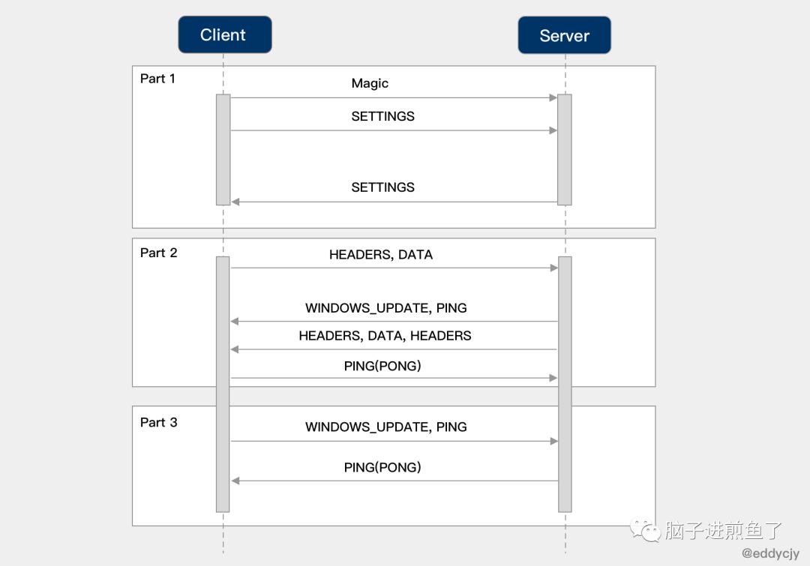
- 在建立连接之前，客户端/服务端都会发送连接前言（Magic+SETTINGS），确立协议和配置项。
- 在传输数据时，是会涉及滑动窗口（WINDOW_UPDATE）等流控策略的。
- 传播 gRPC 附加信息时，是基于 HEADERS 帧进行传播和设置；而具体的请求/响应数据是存储的 DATA 帧中的。
- 请求/响应结果会分为 HTTP 和 gRPC 状态响应两种类型。
- 客户端发起 PING，服务端就会回应 PONG，反之亦可。
这块 gRPC 的基础使用，你可以看看我另外的 《gRPC 入门系列》，相信对你一定有帮助。
浅谈理解
服务端
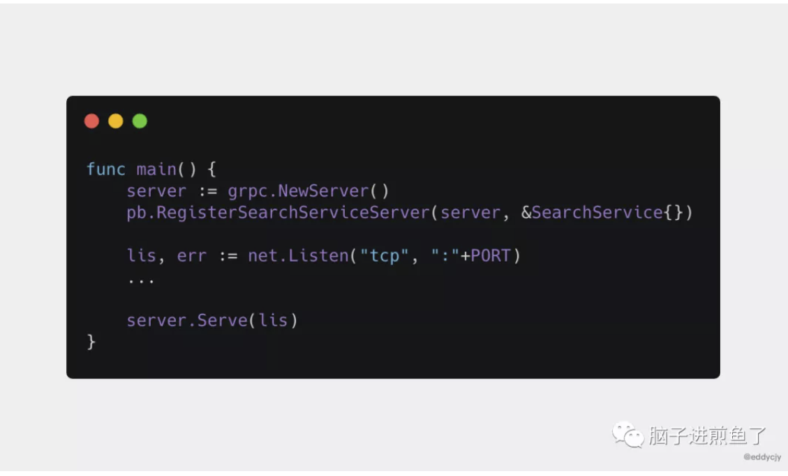
为什么四行代码，就能够起一个 gRPC Server，内部做了什么逻辑。你有想过吗？接下来我们一步步剖析，看看里面到底是何方神圣。
一、初始化
1 | // grpc.NewServer() |
这块比较简单，主要是实例 grpc.Server 并进行初始化动作。涉及如下：
- lis：监听地址列表。
- opts：服务选项，这块包含 Credentials、Interceptor 以及一些基础配置。
- conns：客户端连接句柄列表。
- m：服务信息映射。
- quit：退出信号。
- done：完成信号。
- czData：用于存储 ClientConn，addrConn 和 Server 的 channelz 相关数据。
- cv：当优雅退出时，会等待这个信号量，直到所有 RPC 请求都处理并断开才会继续处理。
二、注册
1 | pb.RegisterSearchServiceServer(server, &SearchService{}) |
步骤一：Service API interface
1 | // search.pb.go |
还记得我们平时编写的 Protobuf 吗？在生成出来的 .pb.go 文件中，会定义出 Service APIs interface 的具体实现约束。而我们在 gRPC Server 进行注册时，会传入应用 Service 的功能接口实现，此时生成的 RegisterServer 方法就会保证两者之间的一致性。
步骤二：Service API IDL
你想乱传糊弄一下？不可能的，请乖乖定义与 Protobuf 一致的接口方法。但是那个 &_SearchService_serviceDesc 又有什么作用呢？代码如下：
1 | // search.pb.go |
这看上去像服务的描述代码，用来向内部表述 “我” 都有什么。涉及如下:
- ServiceName：服务名称
- HandlerType：服务接口，用于检查用户提供的实现是否满足接口要求
- Methods：一元方法集，注意结构内的
Handler方法，其对应最终的 RPC 处理方法，在执行 RPC 方法的阶段会使用。 - Streams：流式方法集
- Metadata：元数据，是一个描述数据属性的东西。在这里主要是描述
SearchServiceServer服务
步骤三：Register Service
1 | func (s *Server) register(sd *ServiceDesc, ss interface{}) { |
在最后一步中，我们会将先前的服务接口信息、服务描述信息给注册到内部 service 去，以便于后续实际调用的使用。涉及如下：
- server：服务的接口信息
- md：一元服务的 RPC 方法集
- sd：流式服务的 RPC 方法集
- mdata：metadata，元数据
小结
在这一章节中，主要介绍的是 gRPC Server 在启动前的整理和注册行为，看上去很简单，但其实一切都是为了后续的实际运行的预先准备。因此我们整理一下思路，将其串联起来看看，如下：
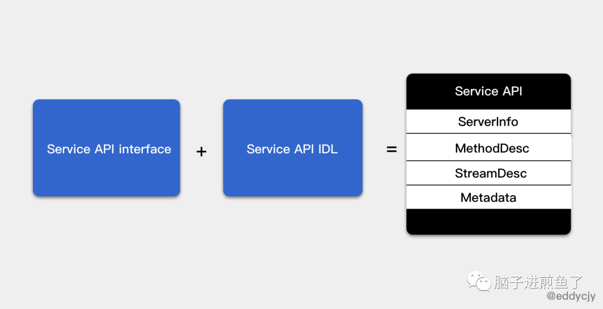
三、监听
接下来到了整个流程中，最重要也是大家最关注的监听/处理阶段，核心代码如下：
1 | func (s *Server) Serve(lis net.Listener) error { |
Serve 会根据外部传入的 Listener 不同而调用不同的监听模式，这也是 net.Listener 的魅力，灵活性和扩展性会比较高。而在 gRPC Server 中最常用的就是 TCPConn，基于 TCP Listener 去做。接下来我们一起看看具体的处理逻辑，如下：
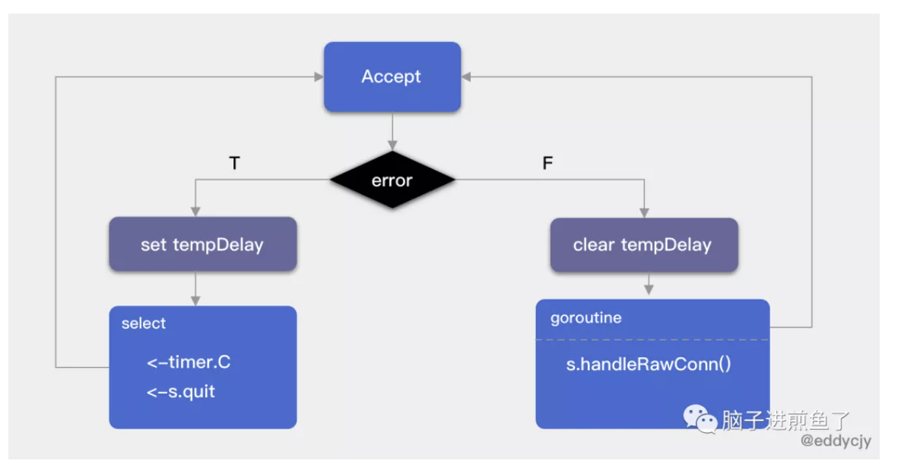
- 循环处理连接，通过
lis.Accept取出连接，如果队列中没有需处理的连接时，会形成阻塞等待。 - 若
lis.Accept失败，则触发休眠机制，若为第一次失败那么休眠 5ms，否则翻倍，再次失败则不断翻倍直至上限休眠时间 1s，而休眠完毕后就会尝试去取下一个 “它”。 - 若
lis.Accept成功，则重置休眠的时间计数和启动一个新的 goroutine 调用handleRawConn方法去执行/处理新的请求，也就是大家很喜欢说的 “每一个请求都是不同的 goroutine 在处理”。 - 在循环过程中，包含了 “退出” 服务的场景，主要是硬关闭和优雅重启服务两种情况。
客户端
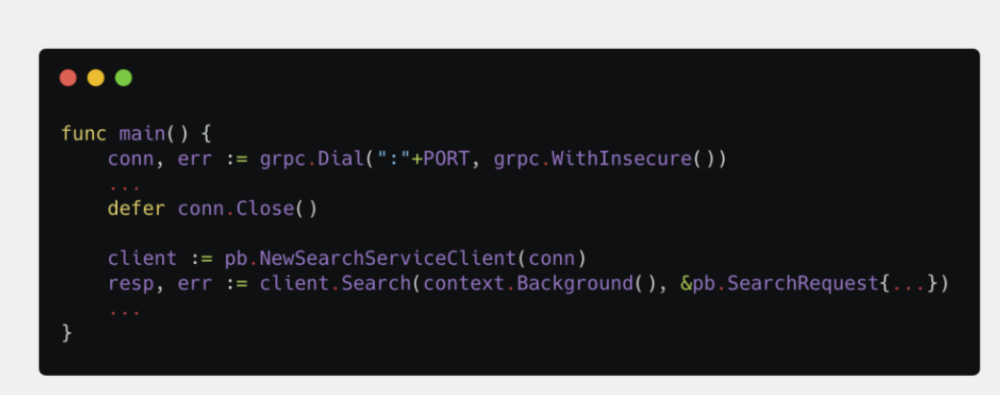
一、创建拨号连接
1 | // grpc.Dial(":"+PORT, grpc.WithInsecure()) |
grpc.Dial 方法实际上是对于 grpc.DialContext 的封装，区别在于 ctx 是直接传入 context.Background。其主要功能是创建与给定目标的客户端连接，其承担了以下职责：
- 初始化 ClientConn
- 初始化（基于进程 LB）负载均衡配置
- 初始化 channelz
- 初始化重试规则和客户端一元/流式拦截器
- 初始化协议栈上的基础信息
- 相关 context 的超时控制
- 初始化并解析地址信息
- 创建与服务端之间的连接
连没连
之前听到有的人说调用 grpc.Dial 后客户端就已经与服务端建立起了连接，但这对不对呢？我们先鸟瞰全貌，看看正在跑的 goroutine。如下：
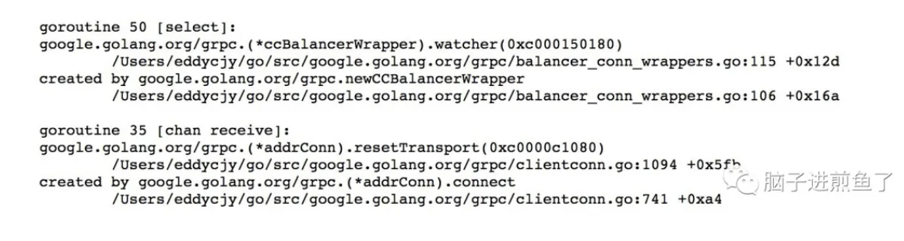
我们可以有几个核心方法一直在等待/处理信号，通过分析底层源码可得知。涉及如下：
1 | func (ac *addrConn) connect() |
在这里主要分析 goroutine 提示的 resetTransport 方法，看看都做了啥。核心代码如下：
1 | func (ac *addrConn) resetTransport() { |
在该方法中会不断地去尝试创建连接，若成功则结束。否则不断地根据 Backoff 算法的重试机制去尝试创建连接，直到成功为止。从结论上来讲，单纯调用 DialContext 是异步建立连接的，也就是并不是马上生效，处于 Connecting 状态，而正式下要到达 Ready 状态才可用。
真的连了吗
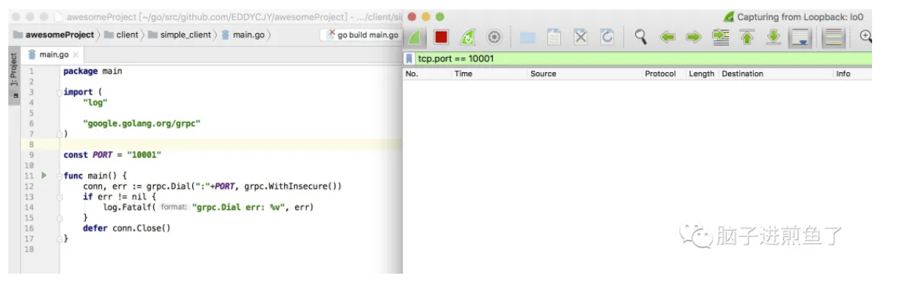
在抓包工具上提示一个包都没有，那么这算真正连接了吗？我认为这是一个表述问题，我们应该尽可能的严谨。如果你真的想通过 DialContext 方法就打通与服务端的连接，则需要调用 WithBlock 方法，虽然会导致阻塞等待，但最终连接会到达 Ready 状态（握手成功）。如下图：
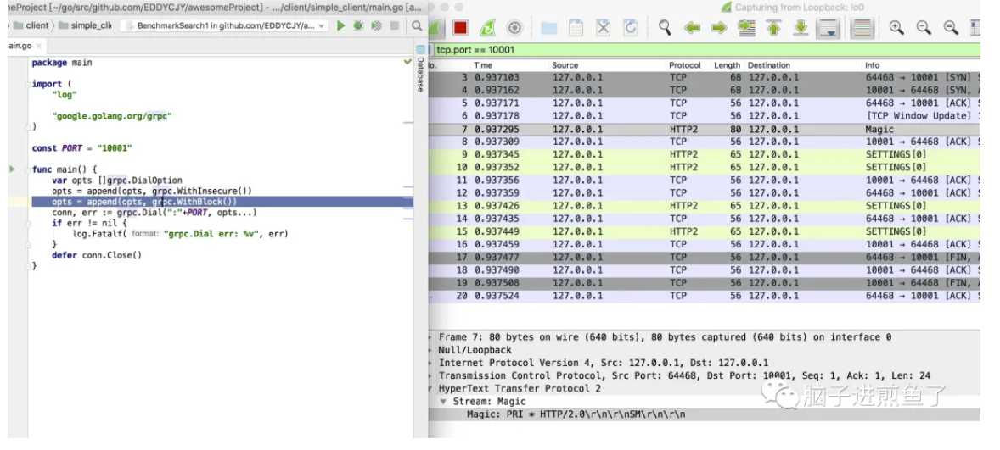
二、实例化 Service API
1 | type SearchServiceClient interface { |
这块就是实例 Service API interface，比较简单。
三、调用
1 | // search.pb.go |
proto 生成的 RPC 方法更像是一个包装盒，把需要的东西放进去，而实际上调用的还是 grpc.invoke 方法。如下：
1 | func invoke(ctx context.Context, method string, req, reply interface{}, cc *ClientConn, opts ...CallOption) error { |
通过概览，可以关注到三块调用。如下：
- newClientStream：获取传输层 Trasport 并组合封装到 ClientStream 中返回，在这块会涉及负载均衡、超时控制、 Encoding、 Stream 的动作，与服务端基本一致的行为。
- cs.SendMsg：发送 RPC 请求出去，但其并不承担等待响应的功能。
- cs.RecvMsg：阻塞等待接受到的 RPC 方法响应结果。
连接
1 | // clientconn.go |
在 newClientStream 方法中，我们通过 getTransport 方法获取了 Transport 层中抽象出来的 ClientTransport 和 ServerTransport，实际上就是获取一个连接给后续 RPC 调用传输使用。
四、关闭连接
1 | // conn.Close() |
该方法会取消 ClientConn 上下文，同时关闭所有底层传输。涉及如下：
- Context Cancel
- 清空并关闭客户端连接
- 清空并关闭解析器连接
- 清空并关闭负载均衡连接
- 添加跟踪引用
- 移除当前通道信息
Q&A
1. gRPC Metadata 是通过什么传输？
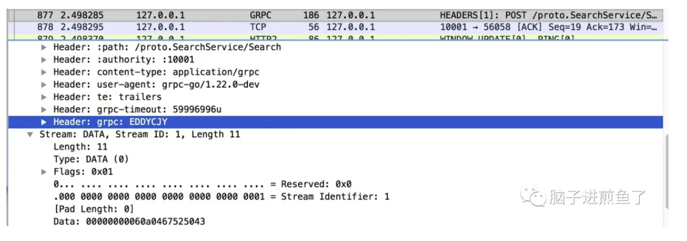
2. 调用 grpc.Dial 会真正的去连接服务端吗？
会，但是是异步连接的，连接状态为正在连接。但如果你设置了 grpc.WithBlock 选项，就会阻塞等待（等待握手成功）。另外你需要注意，当未设置 grpc.WithBlock 时，ctx 超时控制对其无任何效果。
3. 调用 ClientConn 不 Close 会导致泄露吗？
会，除非你的客户端不是常驻进程，那么在应用结束时会被动地回收资源。但如果是常驻进程，你又真的忘记执行 Close 语句，会造成的泄露。如下图：
3.1. 客户端
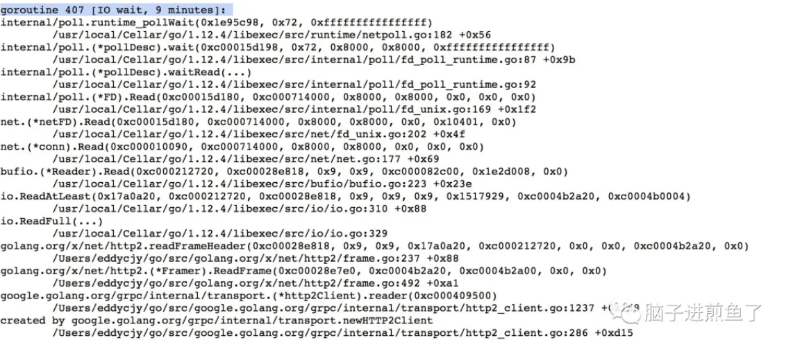
3.2. 服务端
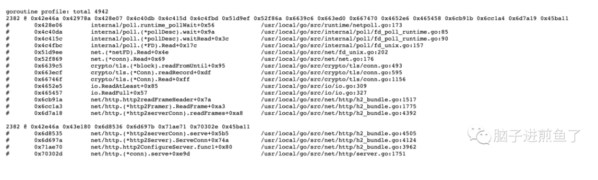
3.3. TCP
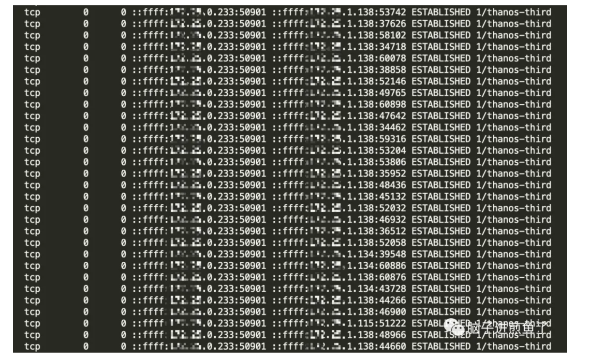
4. 不控制超时调用的话，会出现什么问题？
短时间内不会出现问题，但是会不断积蓄泄露，积蓄到最后当然就是服务无法提供响应了。如下图：
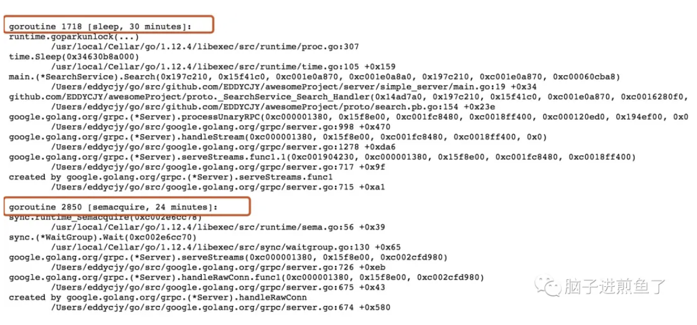
5. 为什么默认的拦截器不可以传多个？
1 | func chainUnaryClientInterceptors(cc *ClientConn) { |
当存在多个拦截器时，取的就是第一个拦截器。因此结论是允许传多个，但并没有用。
6. 真的需要用到多个拦截器的话，怎么办？
可以使用 go-grpc-middleware 提供的 grpc.UnaryInterceptor 和 grpc.StreamInterceptor 链式方法，方便快捷省心。
单单会用还不行，我们再深剖一下，看看它是怎么实现的。核心代码如下：
1 | func ChainUnaryClient(interceptors ...grpc.UnaryClientInterceptor) grpc.UnaryClientInterceptor { |
当拦截器数量大于 1 时，从 interceptors[1] 开始递归，每一个递归的拦截器 interceptors[i] 会不断地执行，最后才真正的去执行 handler 方法。同时也经常有人会问拦截器的执行顺序是什么，通过这段代码你得出结论了吗？
7. 频繁创建 ClientConn 有什么问题？
这个问题我们可以反向验证一下，假设不公用 ClientConn 看看会怎么样？如下:
1 | func BenchmarkSearch(b *testing.B) { |
输出结果：
1 | ... connection error: desc = "transport: Error while dialing dial tcp :10001: socket: too many open files" |
当你的应用场景是存在高频次同时生成/调用 ClientConn 时，可能会导致系统的文件句柄占用过多。这种情况下你可以变更应用程序生成/调用 ClientConn 的模式，又或是池化它，这块可以参考 grpc-go-pool 项目。
8. 客户端请求失败后会默认重试吗？
会不断地进行重试，直到上下文取消。而重试时间方面采用 backoff 算法作为的重连机制，默认的最大重试时间间隔是 120s。
9. 为什么要用 HTTP/2 作为传输协议？
许多客户端要通过 HTTP 代理来访问网络，gRPC 全部用 HTTP/2 实现，等到代理开始支持 HTTP/2 就能透明转发 gRPC 的数据。不光如此，负责负载均衡、访问控制等等的反向代理都能无缝兼容 gRPC，比起自己设计 wire protocol 的 Thrift，这样做科学不少。@ctiller @滕亦飞
10. 在 Kubernetes 中 gRPC 负载均衡有问题？
gRPC 的 RPC 协议是基于 HTTP/2 标准实现的，HTTP/2 的一大特性就是不需要像 HTTP/1.1 一样，每次发出请求都要重新建立一个新连接，而是会复用原有的连接。
所以这将导致 kube-proxy 只有在连接建立时才会做负载均衡，而在这之后的每一次 RPC 请求都会利用原本的连接，那么实际上后续的每一次的 RPC 请求都跑到了同一个地方。
注：使用 k8s service 做负载均衡的情况下
总结
- gRPC 基于 HTTP/2 + Protobuf。
- gRPC 有四种调用方式，分别是一元、服务端/客户端流式、双向流式。
- gRPC 的附加信息都会体现在 HEADERS 帧，数据在 DATA 帧上。
- Client 请求若使用 grpc.Dial 默认是异步建立连接，当时状态为 Connecting。
- Client 请求若需要同步则调用 WithBlock()，完成状态为 Ready。
- Server 监听是循环等待连接，若没有则休眠，最大休眠时间 1s；若接收到新请求则起一个新的 goroutine 去处理。
- grpc.ClientConn 不关闭连接，会导致 goroutine 和 Memory 等泄露。
- 任何内/外调用如果不加超时控制，会出现泄漏和客户端不断重试。
- 特定场景下，如果不对 grpc.ClientConn 加以调控，会影响调用。
- 拦截器如果不用 go-grpc-middleware 链式处理，会覆盖。
- 在选择 gRPC 的负载均衡模式时，需要谨慎。